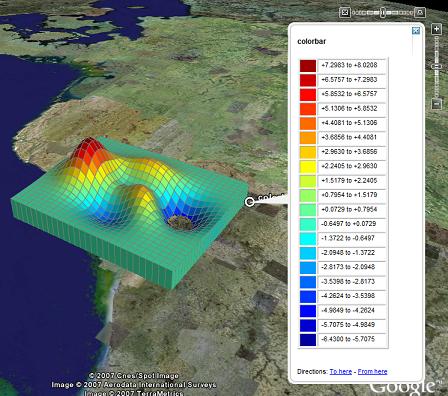

Visualization of manifold surfaces in Google Earth Viewer.
Visualization of manifold surfaces in Google Earth Viewer.

| kmlStr = ge_surf(X,Y,M) |
| kmlStr = ge_surf(X,Y,M,Parameter,Value) |
| kmlStr = ge_surf(X,Y,M) |
Visualizes gridded numerical data contained in variable 'M' at locations specified by vectors 'X' and 'Y' of size Nx1. Contrary to the related ge_imagesc() function, the number of grid cells in the surface plot will be N-1 in both the latitudinal and longitudinal direction.
| kmlStr = ge_surf(X,Y,M,Parameter,Value) |
In addition to the above, this syntax also allows for specification of a number of parameters regarding the appearance of the data when viewed in Google Earth. Assigning values to the parameters can be accomplished by inclusion of an alternating sequence of parameters and their value. The table below provides an overview of the authorized options. The order in which the parameters are included does not matter. Please be aware that the options are case-sensitive. Examples are provided further down.
| Parameter | Description |
| 'altitude' | Height difference relative to the plane of reference (see parameter 'altitudeMode'). |
| 'altitudeMode' | Specifies which plane of reference to use. Must be one of 'absolute', 'relativeToGround' or 'clampToGround'. |
| 'altRefLevel' | Reference level for elevation; by varying this parameter the surface plot is moved vertically. |
| 'cLimHigh' | Specifies the value to which the maximum of the colorbar should apply. Default is max(M(:)). |
| 'cLimLow' | Specifies the value to which the minimum of the colorbar should apply. Default is min(M(:)). |
| 'cMap' | Specifies the colormap to use for visualizing the grid cell colors. Default is 'jet', but any MATLAB colormap can be used. |
| 'description' | A description of objects can be included using this parameter. Its value must be passed as a character array. It will be displayed in the Google Earth Viewer within a pop-up text balloon. |
| 'extrude' | See Extruding objects. |
| 'lineColor' | Line color specification, including transparency. Color value format must be passed as a character array according to the format string 'TTBBGGRR', with 'TT' representing transparency; 'BB', 'GG', and 'RR' representing blue, green, and red color intensity, respectively. Intensity values are denoted as two-digit hexadecimal numbers ranging from 00 to FF. For example, '0000FF00' is fullly transparent green and 'FF0000FF' is fully opaque red. |
| 'lineWidth' | Width of the line between grid cells. |
| 'msgToScreen' | Defines whether verbose feedback is provided by the function when it is accessed and when it finishes. Default is false (which is equivalent to logical(0), but quicker). |
| 'name' | This character array will be used within the Google Earth Viewer 'Places' pane to identify objects. |
| 'nanValue' | Specifies which value (besides NaN itself) in input variable "M" should be treated as Not-a-Number (NaN). |
| 'polyAlpha' | 2-digit hexadecimal character array specifying the transparency of the grid ('00' is fully transparent; 'FF' is fully opaque). |
| 'snippet' | A short description of the feature. In Google Earth, this description is displayed in the Places panel under the name of the feature. If a Snippet is not supplied, the first two lines of the description are used |
| 'tessellate' | See Tessellation. |
| 'timeSpanStart' | See Dynamic visualization. |
| 'timeSpanStop' | See Dynamic visualization. |
| 'vertExagg' | Vertical exaggeration. By varying this parameter, differences within the data become exaggerated vertically. |
| 'visibility' | Whether the object is initially visible. Must be passed to ge_surf() as a numerical value 1 or 0. Visibility state can be changed within the Google Earth Viewer by clicking the object's checkmark in the 'Places' pane. |
| 'xResolution' | By-passes default derivation of grid x-resolution and assigns the value of this parameter to all cells instead. |
| 'yResolution' | By-passes default derivation of grid y-resolution and assigns the value of this parameter to all cells instead. |
Latitudes on the Southern hemisphere must be passed as negative values. Same for longitudes on the Western hemisphere.
Latitudes and longitudes should be passed in units of decimal degrees (also known as fractional degrees). Google Earth uses Simple Cylindrical projection (also known as Plate Carée) with a WGS84 datum.
Use surf() in combination with ge_colorbar() to indicate to what values the colors in a map correspond.
When you customize the appearance of the map, make sure to assign identical values to parameters 'cMap', 'cLimLow', and 'cLimHigh' in the call to ge_surf() and ge_colorbar().
When all values within M are identical, you should assign different values to parameters 'cLimLow' and 'cLimHigh' in the call to ge_surf() and ge_colorbar() to avoid a 'divideByZero' error.
The ge_surf() function can also be used to generate mesh-like plots. In order to do this, set the 'polyAlpha' parameter to '00' and make sure 'lineColor' isn't fully transparent.
See the demo file demo_ge_surf for more details.
The source code below constitutes an example of how ge_surf() and ge_colorbar() may be used to their full potential.
z = peaks(30); x = linspace(3.5,5.5,size(z,2)); y = linspace(51,52.5,size(z,1)); cLimLow = min(z(:)); cLimHigh = max(z(:)); kmlTargetDir = ['..',filesep,'kml',filesep]; kmlFileName = 'demo_ge_surf.kml'; output = ge_surf(x,y,z,... 'polyAlpha','FF',... 'lineColor','FF808080',... 'lineWidth',0.1,... 'cLimLow',cLimLow,... 'cLimHigh',cLimHigh,... 'vertExagg',5e3,... 'altRefLevel',2e4,... 'extrude',true,... 'msgToScreen',1); output2 = ge_colorbar(x(end),y(1),z,... 'numUnits',20,... 'cLimLow',cLimLow,... 'cLimHigh',cLimHigh,... 'cBarFormatStr','%+07.4f'); ge_output([kmlTargetDir,kmlFileName],... [output2 output],... 'name',kmlFileName);
The above will generate a *.kml file that looks like the image below when opened in the Google Earth viewer.
